Antes de rediseñar
La APP de IMAGYM es una herramienta que da soporte una cadena de gimnasios low cost.
Con esta aplicación se puede acceder a las instalaciones y llevar un control de tus accesos. A demás se puede reservar o anular una plaza para las clases colectivas y pistas.
Desde el apartado del usuario se pueden consultar los datos personales y/o modificarlos.
Con la app también se puede consultar los pagos realizados, hacer pagos pendientes y modificar el método de pago.
ESTRATEGIA
¿POR QUÉ LO HICE?
Tras inspeccionar la aplicación de IMAGYM he podido observar que a penas cumple su función y que a pesar de tener buena intención no se saca todo el partido a lo que la app tiene que ofrecer.
Las flaquezas mas importantes que he apreciado son la parte de SPORTS OnDEMANT Y NOTICIAS.
Creo que la app necesita mucho desarrollo en cuanto a lo visual y usabilidad.

ENCUESTA
¿CÓMO LO HICE?
Para saber que opinan algunos usuarios de la app del gimnasio, realicé entrevistas cualitativas online semiestructuradas. Utilizando como herramienta Google Forms.
Lo que dijeron los usuarios
Motivaciones
Es una aplicación sencilla, los usuarios que usan esta app, encuentras cómodo el acceder a las instalaciones mediante un código QR, desde la app pueden reservar clases y gestionar su suscripción al gym.
Desmotivaciones
Video atención al socio es poco practico, consideran mas útil
un chat de incidencias o con un bot.
Visualmente no es
atractiva y la disposición de los elementos es muy mejorable.
Observaciones
Lo que más se usa
Los usuarios usan la app principalmente para acceder a las instalaciones y reservar su plaza en clases colectivas, también es importante llevar el control de pagos mensuales.
Lo que menos se usa
Las noticias no están visibles, y pocos usuarios muestran interés por este apartado. El apartado documento tampoco se usa y el apartado de control de accesos aporta información poco relevante.

¿Qué tan fácil es recordar dónde están las funciones más importantes cada vez que entras en la app?
LEAN UX CANVAS
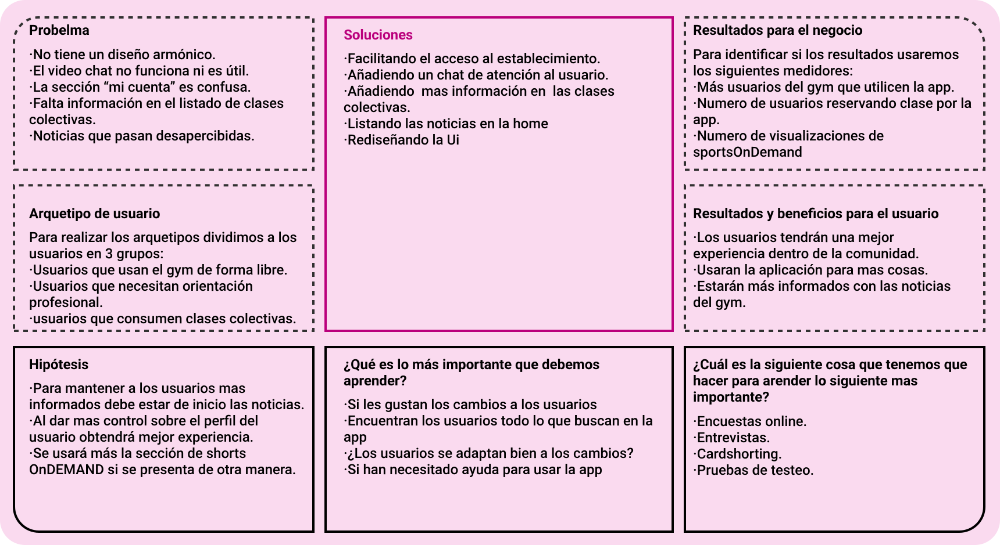MAPA DE TRAYECTORIA
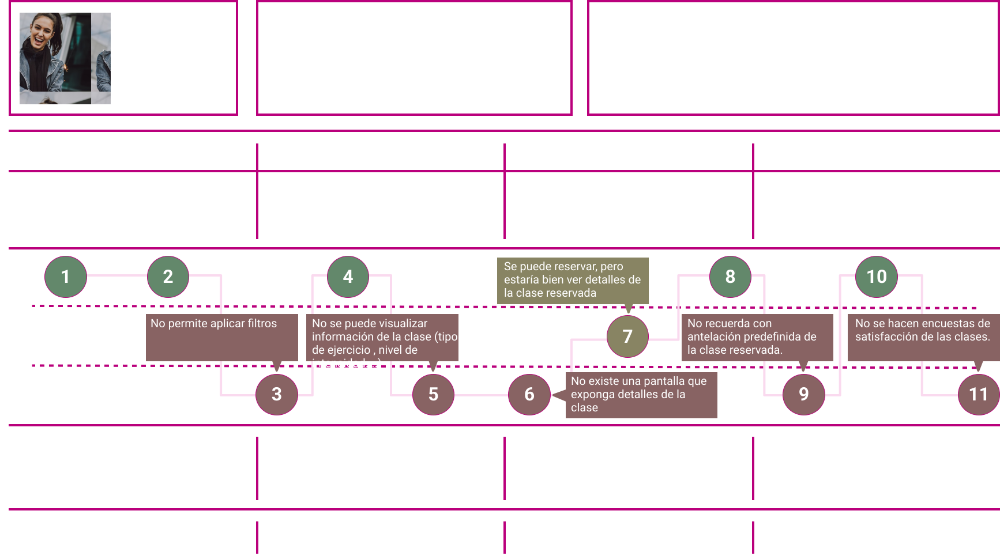Información de la arquitectura
ARQUITECTURA ACTUAL
Realizo un Tree Testing de la estructura actual de la APP para comprobar que tan intuitiva es y ver posibles puntos de mejora
Testeos
Las pruebas las realizaré con la herramienta de Tree Testing de Optimal Workshop, presenté el árbol de contenido de la app y pediré a los usuarios de prueba que realicen dos tareas.
Primera tarea:
“Estas en la puerta del gym y ves un cartel en la puerta que dice que accedas a la app para escanear el código qr”
Con este ejercicio queríamos ver que tan fácil era para el usuario acceder al establecimiento mediante QR.
Segunda tarea:
“Quieres iniciar algún tipo de actividad para ponerte en forma y conocer gente”
La intención de este ejercicio es averiguar la facilidad con la que se reserva una clase nueva.
Propuesta arquitectura
ARQUITECTURA NUEVA
Tras el Tree Testing propongo una nueva arquitectura para mejorar la experiencia de usuario y usabilidad de la app.
Prioridades y objetivos
MATRIZ DE VIABILIDAD, FACTIBILIDAD Y DEASEABILIDAD
Task Flow y wireframes
El usuario deberá usar la app para generar un codigo Qr para acceder a las instalaciones del gimnasio.
Task flow de acceso al gym
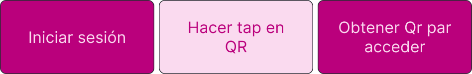Wireframes de acceso al gym
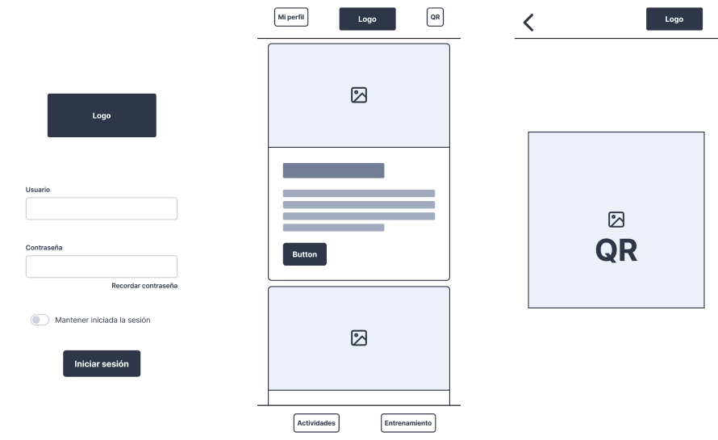El usuario deberá usar la app para generar un codigo Qr para acceder a las instalaciones del gimnasio.
Task flow para reservar una clase colectiva
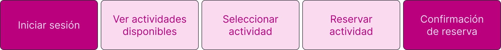Wireframes para reservar una clase colectiva
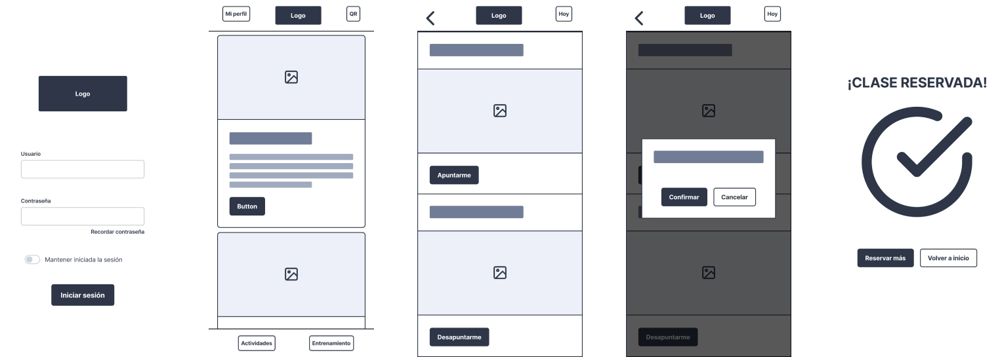Aspectos superficiales
UX writing
APP PARA SOCIOS DEL GYM
App que permite identificar al usuario para acceder al gym ademas se puede usar para gestionar entrenamientos y pagos.
Con el objetivo de mejorar la experiencia del servicio, vamos a tomar en cuenta las sugerencias de los usuarios y los mejores estándares de la industria.
La idea es conseguir que los usuarios tengan una experiencia mas amigable y cercana cuando utilicen la app y esta experiencia se traslade a las instalaciones.
MATRIZ DE VOZ
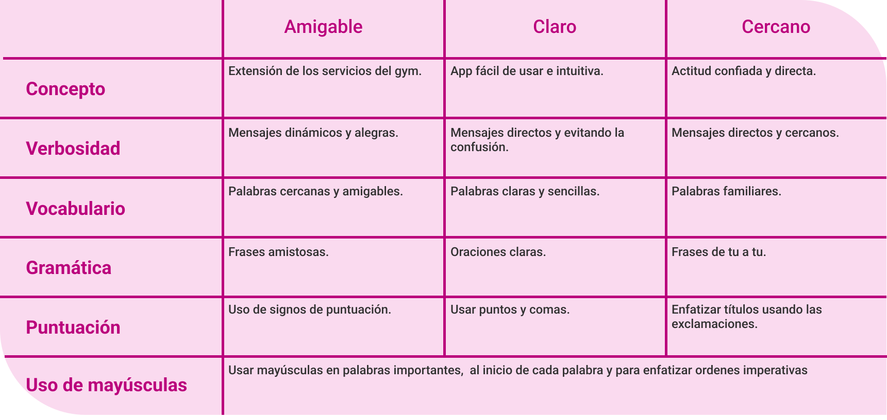TONO
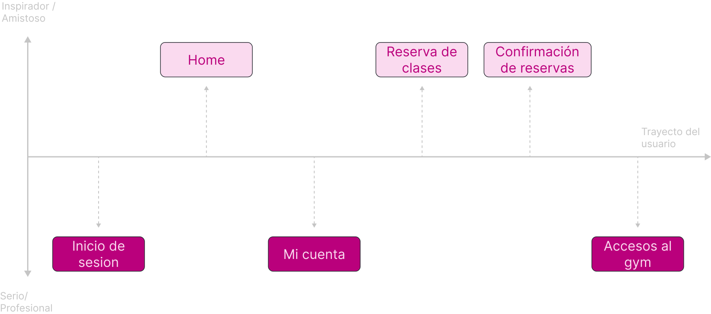Guía de estilos
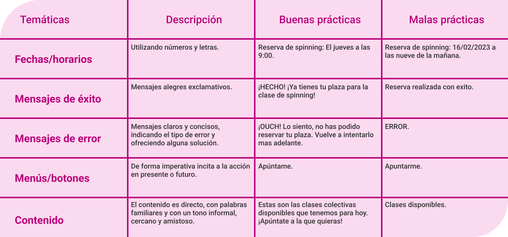Identidad e imagen de marca
COLORES
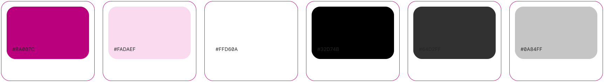TIPOGRAFÍA
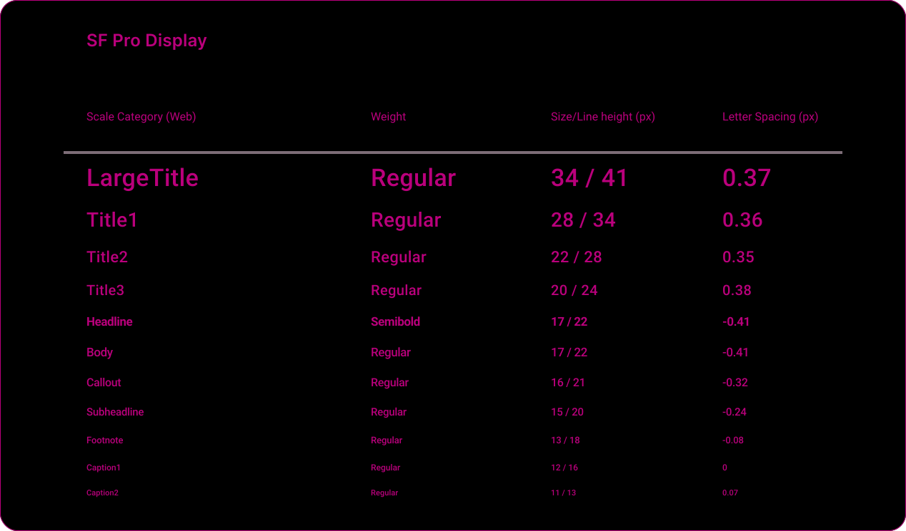Componentes y patrones
CARDS
NAVEGACIÓN E INTERACCIONES
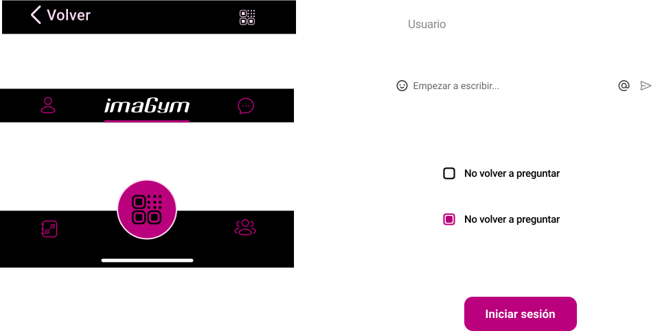ANIMACIONES
CARGA DE LA APP (OPENING)
-Fundamentación:
Se utilizará para reforzar la identidad
de la marca, para darle personalidad.
-Relación con el proyecto y marca:
Imagym es una cadena
de gimnasios low-cost con servicio 24/7 la app debe dar
soporte por eso el inicio de la app se recuerda que es 24.
Transiciones
-Fundamentación:
Se utilizará para para cambiar de
pantalla en pantalla sin transformar elementos.
-Relación con el proyecto y marca:
Cambia escenarios de
la app
Swipe
-Fundamentación:
Se utilizará para reforzar la sensación
ral de transición transformando los elementos.
-Relación con el proyecto y marca:
Elegir de manera mas
fácil y dinámica el día que quiere ver el usuario.
Cambio de estado
-Fundamentación:
Se utilizará para cambiar el estado de
un elemento.
-Relación con el proyecto y marca:
En este caso la
transformación indica la inscripción/desinscripción en una
clase colectiva.
Wireframes de propuesta
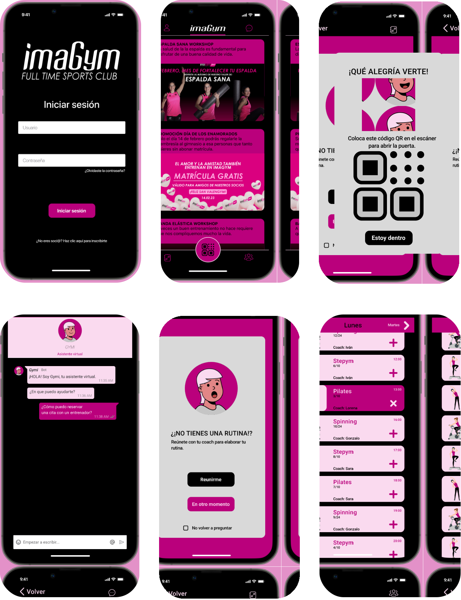Insights de testeos presenciales
En esta etapa de la investigación, luego de considerar diversas alternativas para abordar las hipótesis planteadas desde el principio, hemos construido un prototipo de alta fidelidad que empleamos para realizar pruebas con usuarios reales de IMAGYM, con el fin de identificar oportunidades de mejora y profundizar en la experiencia que estos usuarios tienen con la aplicación.
Metas

Entrevistas


Guion
Usuarios
Resultados
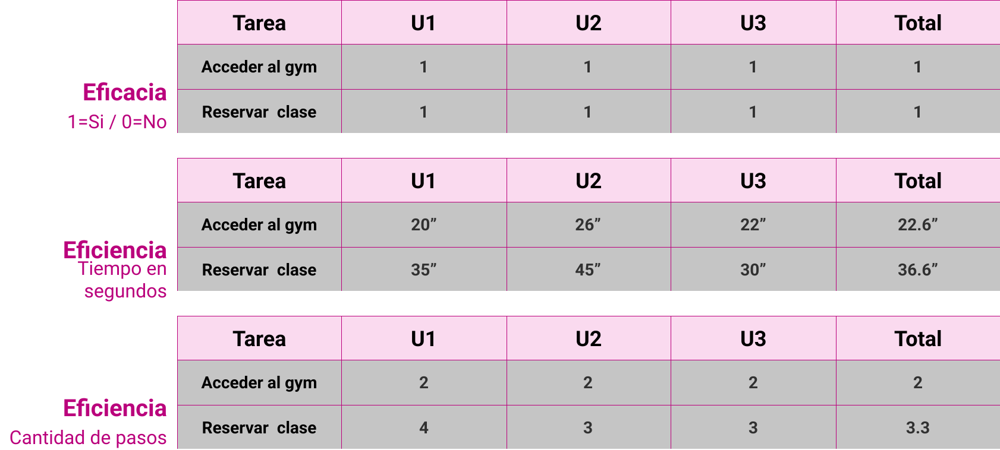
100%
22.6
36.6
Lo que funcionó
Estéticamente ha gustado mucho, es bastante intuitiva y todas las herramientas son accesibles desde el inicio.
Lo que no funcionó
Se echó en falta una confirmación de reserva de case y una solicitud de cancelación de reserva y su respectiva confirmación.